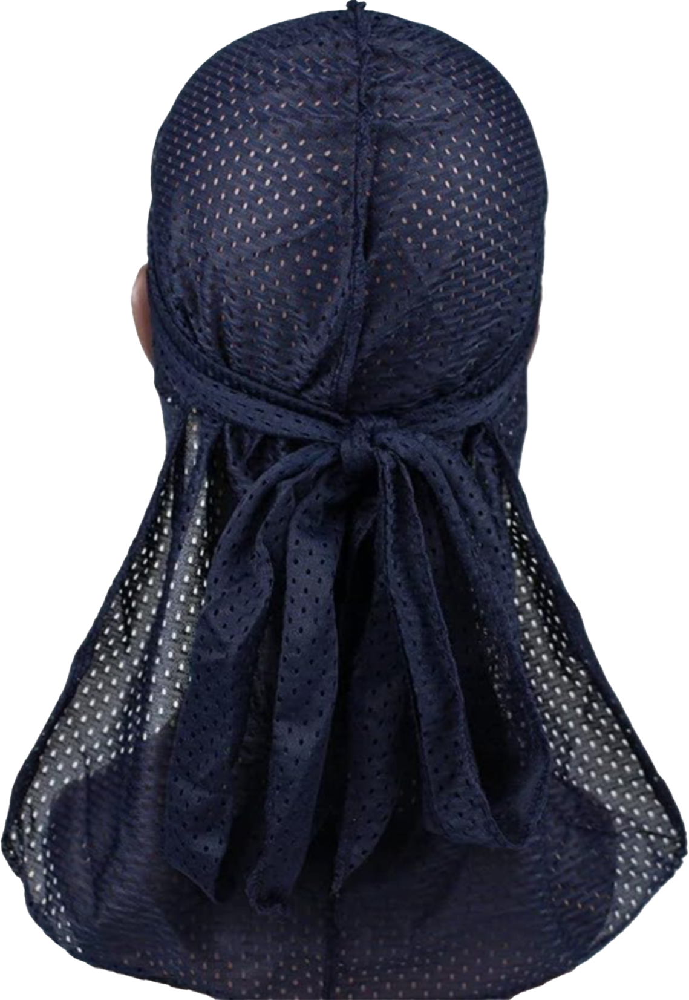
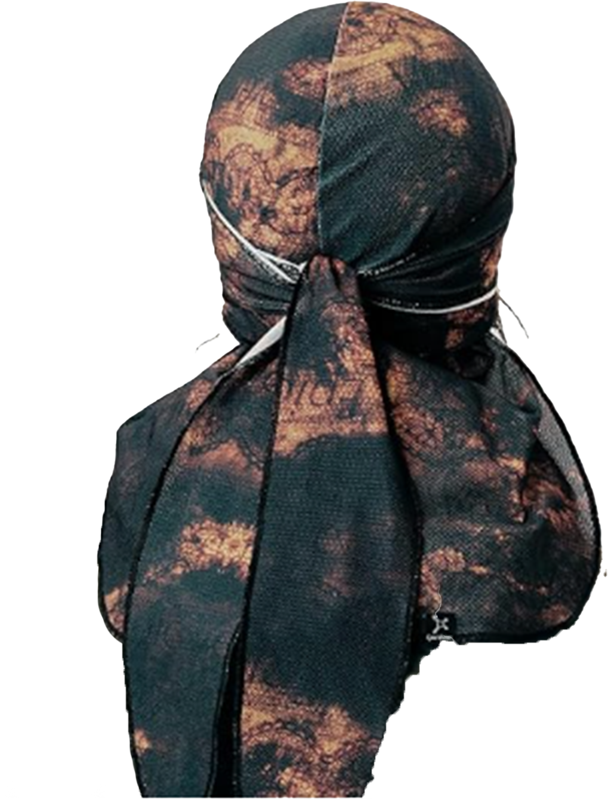
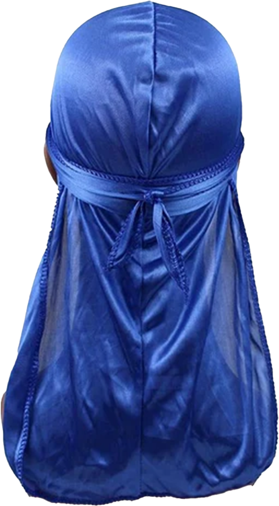
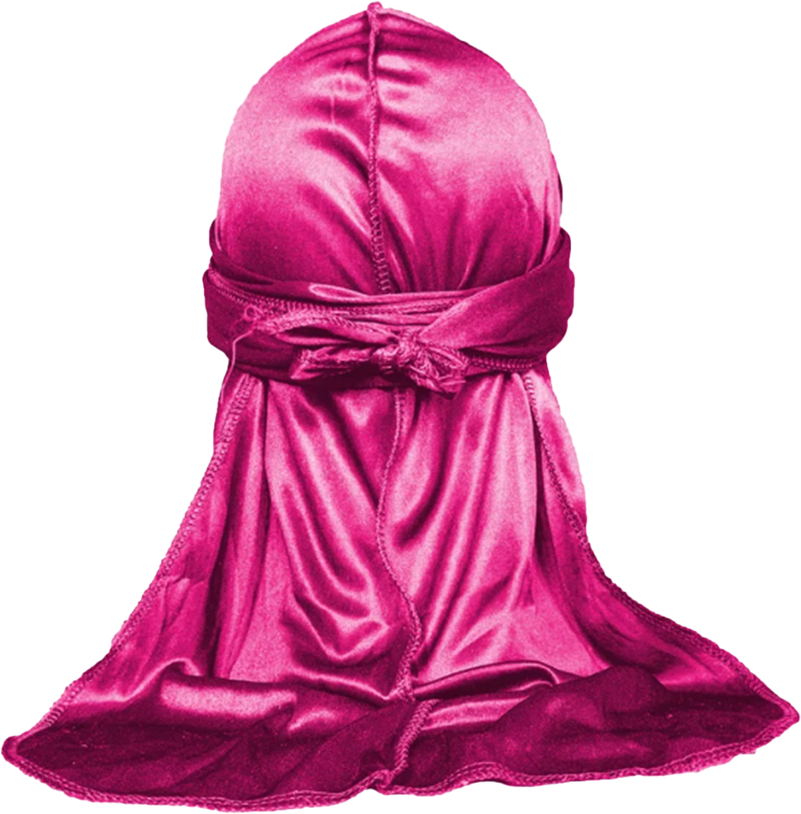
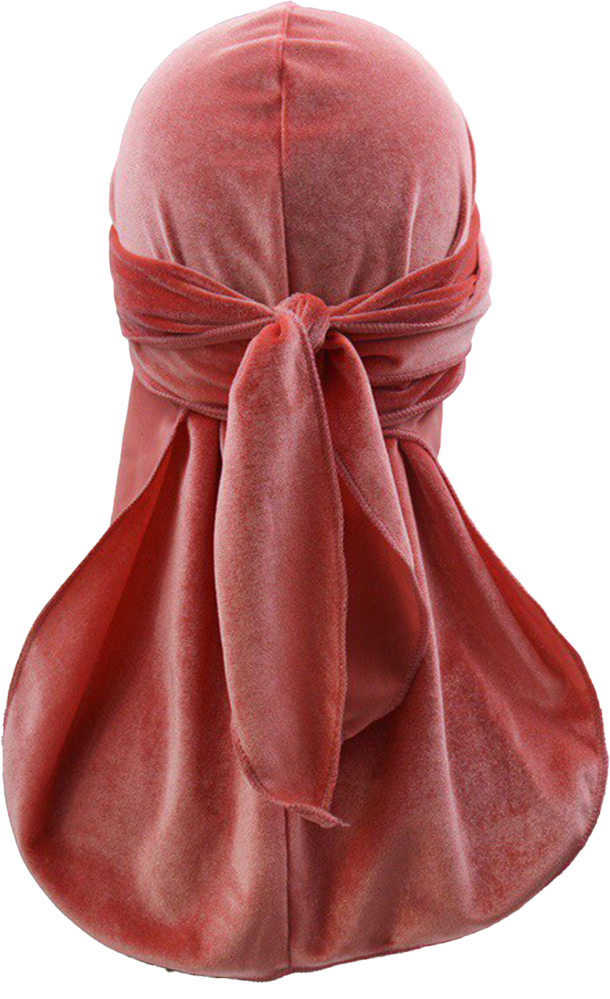

Puisque ma collection grandissait, j’ai appris qu’il existait plusieurs types de durags et que chacun d’entre eux a une utilité différente. Il en existe différentes textures.
Le velours protège et compresse davantage que les autres durags.
Les durags en satin et en soie minimisent la perte d’humidité par évaporation, ce qui permet de maintenir les cheveux bien hydratés et moins sujets à la cassure.
Ceux en polyester sont durables et abordables. Les durags en polyester conviennent à une utilisation quotidienne. Ils sont faciles à entretenir et à préserver, ce qui en fait un choix pratique pour ceux qui portent des durags régulièrement.
Les durags en maille sont très respirants, idéaux pour les climats chauds et pour ceux qui font beaucoup d’exercice.




